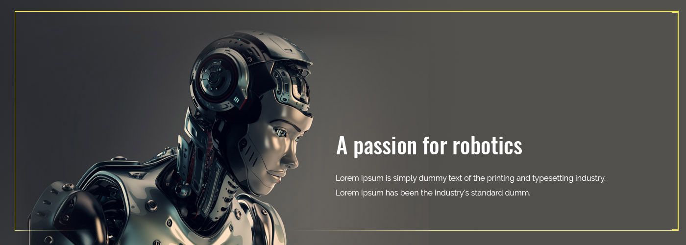

Plenty of job opportunities are available for robotics
engineers both in India as well as in
abroad countries
Candidates with M.Tech degree in Robotics can
seek job
Candidates with M.Tech degree in Robotics can seek job
opportunities
also in industries which manufacture microchips
Plenty of job opportunities are available for robotics
engineers both
Plenty of job opportunities are available for robotics
engineers both in India as well as in
and also in industries which manufacture microchips.
Plenty of job opportunities are available for robotics
engineers both in India as well as in abroad countries
opportunities in space research organizations ISRO and
also in link here
Candidates with M.Tech degree in Robotics can seek job
opportunities in space research organizations ISRO and link to
Plenty of job opportunities are available for robotics engineers both in India as well as in abroad countries Candidates with opportunities in space research organizations ISRO also in industries which manufacture microchips link to
If you would you like click here
Plenty of job opportunities are available for robotics engineers both in India as M.Tech degree in Robotics can seek job opportunities in space research organizations ISRO and also in industries which manufacture microchips. engineers both in India as well as in abroad countries link to microchips
and also in industries which manufacture microchips. Plenty of job opportunities are available for robotics Candidates with M.Tech degree in Robotics can seek job opportunities in space research organizations ISRO and also in industries which manufacture microchips
M.Tech degree in Robotics can seek job opportunities in space research organizations ISRO and also in industries which manufacture microchips. opportunities in space research organizations ISRO and also in industries which manufacture link to microchips
we beleive the face rocommanjh engineers both in India as well as in abroad countries nd also in industries which manufacture microchips. Plenty of job opportunities are available for robotics nd also in industries which manufacture microchips. Plenty of job opportunities are available for robotics nd also in industries which manufacture microchips. engineers both in India as well as in abroad countries link to link 1
Whether you are a beginner in Selenium or using it for quite a time, you’ll need a platform to learn and test the automation artifacts. Hence, we tried demo websitesautomation artifacts. Hence, we tried demo websites
Whether you are a beginner in Selenium or using it for quite a time, you’ll need a platform to learn and
test the automation artifacts we tried demo websitesautomation artifacts. Hence, we tried demo
-Read more-
Whether you are a beginner in Selenium or using it for quite a time, you’ll need a platform to learn and
test the automation artifacts. Hence, we tried demo websitesautomation artifacts. Hence,
Whether you are a beginner in Selenium or using it for quite a time, you’ll need a platform to learn and
test the automation artifacts. Hence, we tried
Nitheesh Mohan 21-02-2020